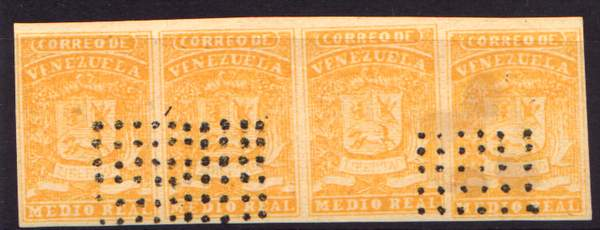
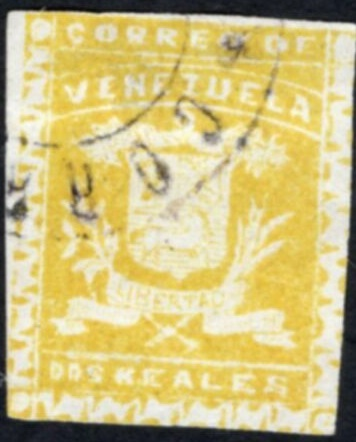

Genuine stamps
Return To Catalogue - Venezuela - miscellaneous
Note: on my website many of the
pictures can not be seen! They are of course present in the
catalogue;
contact me if you want to purchase it.
Check out the excellent website on Venezuelian stamps, its locals and forgeries http://www.mystamps.net, made by Williams Castillo. I would like to thank him for setting some of the information available to me.
Genuine stamps
For the specialist; these stamps were issued in a fine and a coarse impression.
Forgeries, there are 7 different kind of forgeries known, examples:


This cancel with dots was never used in Venezuela, any stamps with such postmarks can easily be recognized as forgeries. This is probably the most common forgery. I think these forgeries are made by Spiro. Fournier also offers these forgeries in his 1914 pricelist as second choice forgeries, he asks 1 Swiss Franc for 4 values (I presume this includes a 1/2 r yellow and red?). They can also be found in 'the Fournier album of philatelic forgeries'. The label with "LIBERTAD" is placed too high and it is not curved enough. The background consists of crossed lines (instead of vertical lines only as in the genuine stamps).


Lower front leg of horse is pointing towards "D" of
"LIBERTAD"
In Album Weeds another forgery is described having the dots cancel. In this case the word "LIBERTAD" is placed too high in its label. Furthermore the crossed tails of the cornucopiae are exactly placed centrally under the "EZ" of "VENEZUELA". Could the above 2 r brown forgeries be the ones mentioned there? Note that the lower leg of the horse is pointing towards the "D" of "LIBERTAD", while it is pointing towards the "A" of this word in the above Spiro forgeries.

The second forgery described in Album Weeds has a white stop after the word "VENEZUELA". The crossed tails of the cornucopiae are exactly placed under the "ZU" of "VENEZUELA". Note the cancel consisting of "CORREOS 7.1.60. II-III", which I have seen on other forgeries of other countries.
"C" of "CORREO" is smaller than the "O" and the "Z" of "VENEZUELA" leans over to the left.
It seems that these forgeries were seized by the government of Venezuela and then sold to collectors. The "O" of "CORREO" is broken on top.
(Forgery?)
I've been told that the above stamp is a forgery, however, it looks quite convincing to me. The only thing I can say is that the white space between "CORREO DE" and "VENEZUELA" looks quite large.
More information can be found on http://www.mystamps.net/venezuela/identificacion/escudos01.html (in Spanish, made by Williams Castillo, 7 different forgeries are listed here).
Could this be the fourth forgery mentioned by Williams Castillo?

The word "VENEZUELA" and the band that surrounds it, are narrower than in the genuine stamps. The word "LIBERTAD" occupies almost the whole containing label.. The right banner finishes in the lower corner and the left, almost in the corner.

Forgeries? Similar design as postage stamps, but with ornaments
at the sides and bottom. Other sources say this is an essay of
1859.

A page from the Fournier Album. In my view, filled with Spiro
forgeries.
{kind=link}